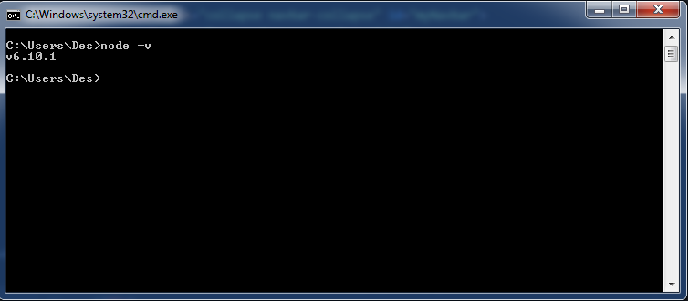

Installing NODE and NPM
There's a great blog post on CSS Tricks here
On Windows
- Download the installer from nodejs.org website
- Run the installer
- Follow the instructions
- Restart the computer
Check that it's working by opening the command prompt or powershell and typing node -v once we see a version number we're good.

Now that we have node working we can install sass with the node package manager NPM
Installing GULP with NPM
We can install a package locally or globally, we'll need to use gulp on the command line and in or project so we'll need to install it both locally and globally
On Windows
From the command line run the command npm install gulp -g to install globally. On Windows you might have to run the command prompt as the administrator Instructions here. Once installed globally we need to install locally so cd into your working directory where we'll need to first create a package.json file which is essential when working with projects that use NPM info here. Create the package.json file by running the command npm init which will walk you through a few questions about your project.
Example of package.jason
{
"name": "webdevtools",
"version": "1.0.0",
"description": "A website to help set up your wed development enviornment and
install some helpfull tools using either gulp or npm scripts",
"main": "index.js",
"scripts": {
"test": "echo \"Error: no test specified\" && exit 1"
},
"keywords": [],
"author": "",
"license": "ISC",
"devDependencies": {
}
}
Now that we have a package.json file we can install packages locally as a dependency or a devdependency. A dependency is a package that is needed for the project to run and a devDependency is a package that helps with the development of the web app like sass for example. Now we can install gulp locally with the command npm install gulp --save-dev. Once finished gulp will be added to the devDependencies object of the package.json file.
"devDependencies": {
"gulp": "^3.9.1"
}
Installing GULP plugins
We will be installing browser-sync, gulp-autoprefixer, gulp-imagemin, gulp-sass, and gulp-sourcemaps
- Open up a command prompt or powershell and execute the following commands
- npm install --save-dev browser-sync
syncs your project in the browser - npm install --save-dev gulp-autoprefixer
automatically adds vendor prefixes to your code - npm install --save-dev gulp-imagemin
compresses gif, png, jpeg, svg files - npm install --save-dev gulp-sass
a preprocessor for css - npm install --save-dev gulp-sourcemaps
maps your original sass line numbers with your processed css file for debugging
Now our devDependencies object should look like this in package.json
"devDependencies": {
"browser-sync": "^2.18.8",
"gulp": "^3.9.1",
"gulp-autoprefixer": "^3.1.1",
"gulp-imagemin": "^3.2.0",
"gulp-sass": "^3.1.0",
"gulp-sourcemaps": "^2.6.0"
}
}
To make these plugins work we need a file called gulpfile.js to run and configure them. Before writing the gulpfile we need to set up our folder structure in our project like below with a dist folder containing empty images and css folders to hold the processed files for production. A src folder with images folder to hold original images and a sass folder to hold all our sass partials and a styles.scss file for all our sass styles

Open up your favorite text editor and type in the following into your gulpfile.js and save it to the parent directory of your project folder
// create variables to require each plugin
var gulp = require('gulp');
//we chain .create to require to create a server that listens for changes and updates the browser
var browserSync = require('browser-sync').create();
var autoprefixer = require('gulp-autoprefixer');
var imagemin = require('gulp-imagemin');
var sass = require('gulp-sass');
var sourcemaps = require('gulp-sourcemaps');
// create our gulp tasks using the variables we created above
//call gulp.task and name it css supplying a function that returns our source
//folder which we run our tasks on with the pipe function
gulp.task('css', function() {
//use globbing to search for all .scss file to process in our sass folder
return gulp.src('src/sass/**/*.scss')
.pipe(sourcemaps.init())
.pipe(sass({outputStyle: 'compressed'}).on('error', sass.logError))
.pipe(autoprefixer({
browsers: ['last 2 versions']
}))
.pipe(sourcemaps.write('./maps'))
//call gulp.dest with our dist folder path to write the processed files
.pipe(gulp.dest('dist/css'))
.pipe(browserSync.stream())
});
//run imagmin manually from cli once on all images in src/images and write to dist/images
gulp.task('images', function(){
return gulp.src('src/images/*')
.pipe(imagemin())
.pipe(gulp.dest('dist/images'))
});
//copy any files that are not processed to the dist folder
gulp.task('copy', function() {
return gulp.src('src/**/*.+(html|js)')
.pipe(gulp.dest('dist'))
.pipe(browserSync.stream())
});
//initialise browserSync pointing it to our distribution folder
gulp.task('browserSync', function() {
browserSync.init({
server: {
baseDir: 'dist'
},
})
});
//create a watch task passing in an array of tasks to run before anything else
gulp.task('watch', ['browserSync', 'css'], function(){
//then watch for changes in sass for .scss and src for html or js running css
// or copy tasks respectively
gulp.watch('src/sass/**/*.scss', ['css']);
gulp.watch('src/**/*.+(html|js)', ['copy']);
});
Now all we need to do is run gulp watch from our project directory and our gulp tasks browserSync and css will run opening up a borwser updating any changed files in our src folder to the dist folder and watching for any future changes in the src folder while keeping the browser in sync. Pretty cool huh!
Installing Sass with NODE NPM
On Windows
Download the installer from git-scm.com website and run and follow the instruction to install Git Version Control
<div class="panel-body">
<ol>
<li>Open up a command prompt or powershell</li>
<li>Depending on where you want to install node-sass type <strong>npm install -g node-sass</strong> to install globally or navigate to your project directory and type <strong>npm install --save-dev node-sass</strong> to install in your project directory and make it part of your dependencies</li>
<li>Best practices suggest installing in your project directory and making it part of your dependencies</li>
<li>We will be installing locally and using a package.jason file</li>
<li>Create a package.jason file in your project directory</li>
</ol>
</div>